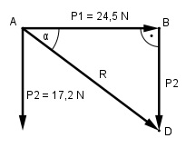

Aufgabe 110 Zwei Kräfte P1 = 24,5 N und P2 = 17,8 N stehen senkrecht aufeinander. Wie groß ist die Resultierende R und ihr Richtungswinkel α zu P1?

Im Dreieck ADB: Satz von Pythagoras: R2 = P112 + P22 = 24,52 N2 + 17,82 N2 = 917,1 N2 R = √917,1 N2 = 30,3 N P2 17,8 N tan α = ----- = ---------- = 0,7265 --> α = 36° P1 24,5 N